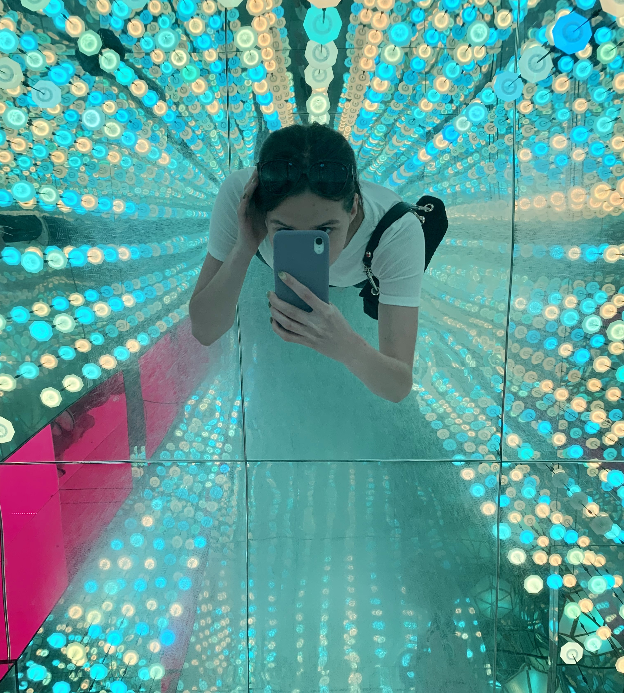

Hi! My name is Polina
I am from Minsk, Belarus. But I right now I study Contemporary Communication in Klaipeda, Lithuania, at the LCC International University. I consider Minsk to be my home, which I miss with my whole heart when I am away. But I love travelling as much as I love coming back home! I like photographing a lot, it freezes the moments I want to remeber. So, I decided to share little pieces of my life at Home, and of my adventures abroad through the photographs! To inspire you to see the beauty in the memories we have!